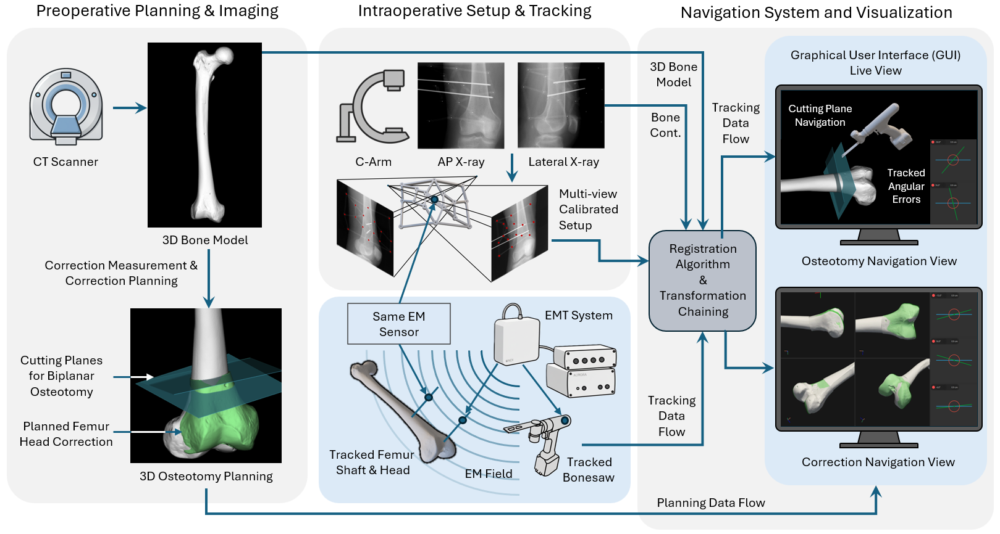

01. Overview
Accurate execution of preoperative plans in corrective femoral osteotomies remains a substantial challenge. Traditional free-hand execution depends heavily on surgeon experience and iterative fluoroscopy, exposing the patient and surgical team to significant radiation. While patient-specific 3D-printed guides (PSI) constrain tool placement to preoperative plans, they require extensive soft-tissue stripping, generate production lead times, and add to overall surgical costs.
To address these limitations, we present an integrated, electromagnetic tracking (EMT)-based navigation system. The workflow unifies three core components: preoperative CT-based planning, an automatic two-view C-arm calibration and X-ray-to-CT registration pipeline, and real-time intraoperative tracking of surgical tools. This system maintains a minimal surgical footprint and provides real-time guidance for sawblade positioning and fragment correction without line-of-sight constraints.
02. Method & Pipeline

The registration protocol operates in two phases:
Initial Registration: Establishes a spatial link between the preoperative CT bone model and the EMT coordinate system using a custom calibration sleeve mounted with EMT sensors. A U-Net-based model automatically identifies calibration bead locations in the C-arm images to solve C-arm intrinsic/extrinsic parameters and compute the 3D X-ray-to-CT transform.
Real-Time Navigation: Tracks the relative pose of distal fragments with respect to the proximal femur using miniature sensors anchored to 3mm Kirschner wires (K-wires). Dynamic updates enable the visual GUI to continuously decompose alignment errors into extension, derotation, and varisation.
03. Navigation Animation
04. Key Feasibility Results
The proposed system was validated through a feasibility study utilizing 18 synthetic femora replicas and compared against conventional free-hand techniques and patient-specific instrumentation (PSI) guides.
| Method | Mean Angular Error (°) | Mean Translational Error (mm) | Outliers (>5° Clin. Threshold) |
|---|---|---|---|
| Free-hand | 6.32 ± 2.36 | 5.56 ± 2.25 | 4 / 6 trials |
| PSI (Guides) | 3.44 ± 1.16 | 3.36 ± 1.18 | 0 / 6 trials |
| EMT Navigation (Ours) | 3.05 ± 0.75 | 3.59 ± 1.44 | 0 / 6 trials |
Our navigation system showed a 52% reduction in mean angular error compared to free-hand techniques. Crucially, the system demonstrated statistical equivalence to PSI guides in both rotation and translation accuracy, while requiring significantly less soft-tissue exposure and only two fluoroscopic views for initialization (compared to clinical free-hand benchmarks which average over 34 images).